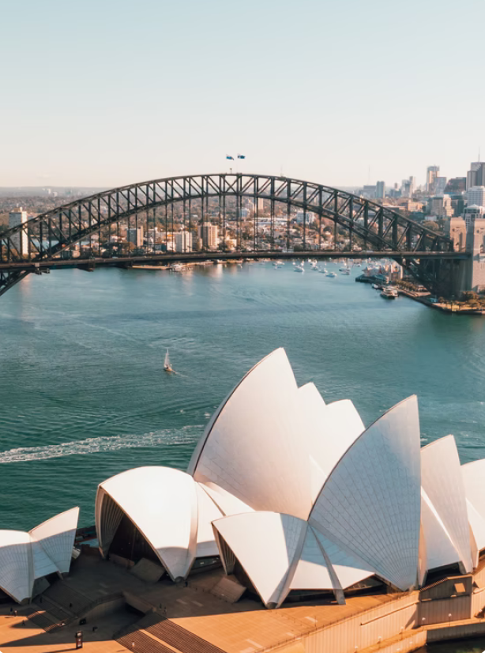
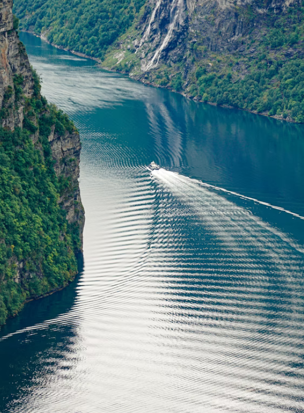

Japan
View on Google Maps
Mount Fuji
12 Jan, 2021 - 24 Jan, 2021
Mount Fuji is the tallest mountain in Japan, standing at 3,776 meters (12,380 feet). Mount Fuji is the single most popular tourist site in Japan, for both Japanese and foreign tourists.

Australia
View on Google Maps
Sydney Opera House
27 May, 2021 - 8 Jun, 2021
The Sydney Opera House is a multi-venue performing arts centre in Sydney. Located on the banks of the Sydney Harbour, it is often regarded as one of the 20th century's most famous and distinctive buildings.

Norway
View on Google Maps
Geirangerfjord
01 Oct, 2021 - 18 Nov, 2021
The Geiranger Fjord is a fjord in the Sunnmøre region of Møre og Romsdal county, Norway. It is located entirely in the Stranda Municipality.